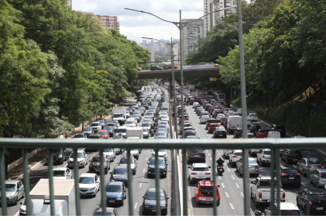
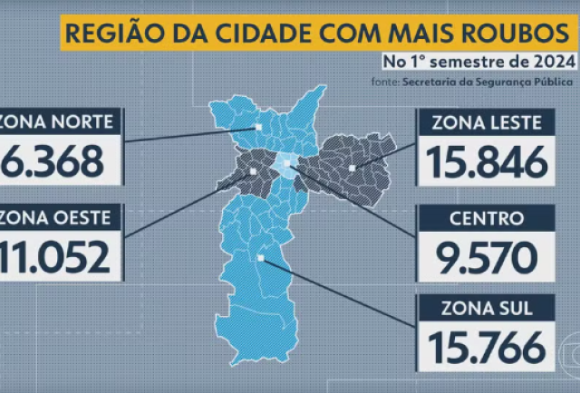
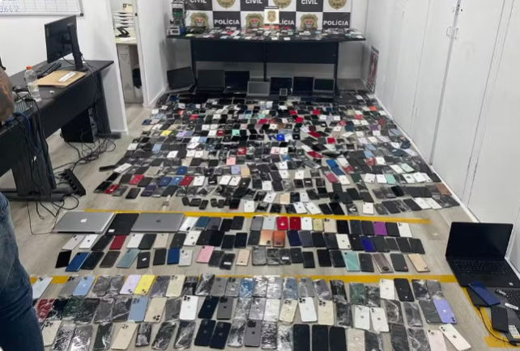

Estado de SP registra 181 roubos ou furtos de carro por dia; veja quais modelos são alvos dos
criminosos
"Os modelos mais visados foram principalmente carros populares e de ampla
circulação, mas chama a atenção alguns utilitários e SUVs na lista, como o Jeep/Renegade. Os criminosos
estão diversificando suas preferências", analisou Vitor Corrêa, coordenador do Comando de Operações do
Grupo Tracker.
Ver mais...

Zona Leste de SP é a região que mais registrou roubos na cidade no 1° semestre de 2024, diz
levantamento
De acordo com levantamento feito pelo Bom Dia SP, foram 15.846 casos
registrados na região de janeiro a junho deste ano. Em média, pelo menos 87 roubos foram registrados por
dia na região. Média de três roubos por hora.
Ver mais...

15 das 50 cidades brasileiras com maior taxa de furtos e roubos de celulares ficam em SP
A cada 1 minuto e 42 segundos, um celular foi furtado ou roubado no
estado de São Paulo em 2023. É o que apontam os dados apresentados pelo 18º Anuário do Fórum Brasileiro
de Segurança Pública, divulgado nesta quinta-feira (18).
Ver mais...
Onze pessoas morrem em ataques na madrugada na Grande São Paulo
Onze pessoas morreram em ataques criminosos na Grande São Paulo entre a noite desta quinta (8) e na
madrugada desta sexta-feira (9). As mortes aconteceram na Zona Sul da capital, em Santana de Parnaíba e
em Santo André, no ABC.
Ver mais...